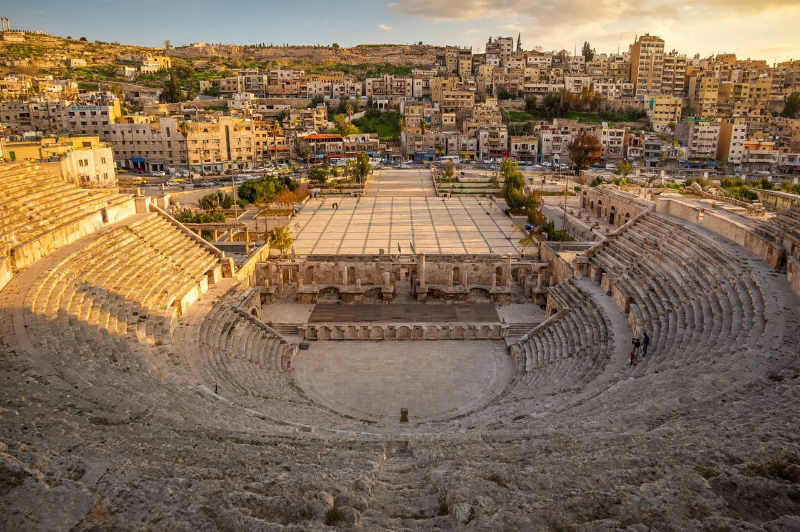

[Image placeholder: The Roman Theatre in downtown Amman]| Country | Jordan |
|---|---|
| Governorate | Amman Governorate |
| Population | About 4.6 million (city region estimates) |
| Elevation | 700–1,100 m across its hills |
| Ancient names | Rabbath Ammon; Philadelphia |
**Amman** is the capital and largest city of Jordan, and the country's economic, political and cultural centre. Built across a series of hills (jabals), the modern city grew explosively from a small town after becoming capital of Transjordan in 1921 and absorbing successive waves of refugees.
Amman's history stretches back millennia: it was Rabbath Ammon, capital of the Ammonites, then the Greco-Roman city of Philadelphia in the Decapolis. The citadel hill holds the Roman Temple of Hercules, and the downtown Roman Theatre seats about 6,000.
After periods under Roman, Byzantine and Umayyad rule, the city declined to a village before Circassian settlers arrived in 1878. Amman became capital of the Emirate of Transjordan in 1921 and grew with Palestinian refugees in 1948 and 1967, Iraqis after 2003, and Syrians after 2011, making it one of the Arab world's most diverse cities.
Western districts such as Abdali host modern malls, the twin Jordan Gate towers and wide avenues, while East Amman is denser and older. Amman is a regional hub for banking, IT and NGOs, and is known for its relative stability amid a turbulent region.